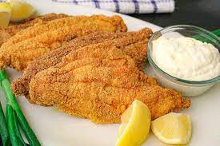

!DOCTYPE html>
Fried Catfish
Fried Catfish

Today’s recipe is the ultimate Southern Fried Catfish: a quintessential Southern recipe passed down from my Big Mama. Get ready for spicy, crunchy, salty fish that is begging to be served for dinner tonight!
Ingedients
- 2/3 cup yellow cornmeal
- 1/4 cup all purpose flour
- 1 1/2 tsp seasoned salt
- 1/2 tsp black pepper
- 1/2 tsp cayenne pepper
- 1/2 tsp lemon pepper
- 1/4 tsp paprika
- 2 large eggs
- 2 tsp hot sauce
- 1 lb catfish fillets
Instructions
- In a brown bag or ziploc bag, add cornmeal, flour, salt, pepper, cayenne, lemon pepper, and paprika and shake together.
- In a deep pie plate or large shallow bowl, whisk together eggs and hot sauce.
- Add each filet into beaten eggs on both sides then add to the cornmeal breading and shake liberally to coat well. Place the fillet on the coated baking sheet. Repeat with each fillet.
- Let fish set for about 10-15 minutes in the refrigerator then remove.
- In a large dutch oven, pot or deep fryer, pour in about 4 inches of oil and heat over medium high heat until the temperature reaches approximately 340 degrees.
- Working in batches, fry fillets until golden brown then remove and drain on racks or paper towels.
- Cool for 5-10 minutes then serve with lemon and chopped parsley.